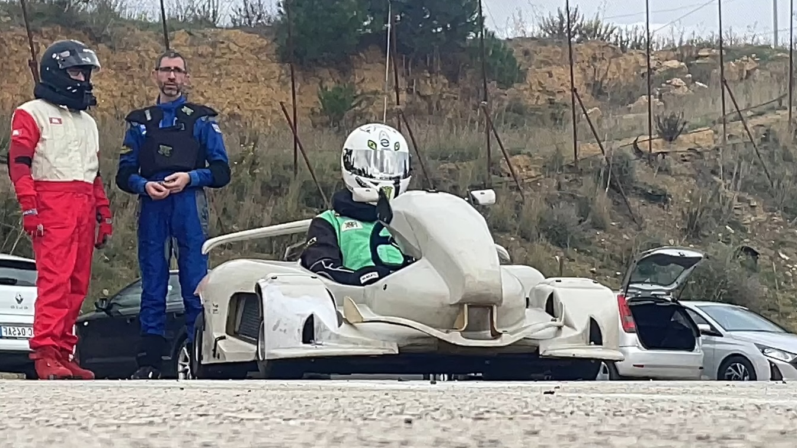

Campionati Endurance
Resistenza, strategia e lavoro di squadra
I Nostri Campionati Endurance
Le gare di endurance rappresentano la massima espressione del motorsport, dove resistenza fisica, strategia di gara e gestione del mezzo fanno la differenza. Tre categorie per metterti alla prova in gare di lunga durata.

Le Nostre Categorie

Endurance SN1
La massima espressione delle gare di resistenza con kart proprio

Endurance SN1 Light
Categoria intermedia con kart fornito dall'organizzazione

Endurance SN2
Il primo approccio alle gare di lunga durata
Struttura Evento
- Prove Libere (30 minuti)
- Qualifiche (15 minuti)
- Gara (2 ore)
- Pit Stop Obbligatori (3)
Regole Principali
- Minimo 3 cambi pilota
- Tempo massimo stint: 30 minuti
- Rifornimento durante i pit stop
- Strategia libera dei cambi

Entra nel Mondo dell'Endurance
Metti alla prova le tue capacità nelle gare di lunga durata